9.1. Hot node pools
To create a node pool you need the ROLE_ADMIN or ROLE_RUN_ADMIN role, or the ROLE_NODE_POOL_MANAGER role (restricted to a Future dated pool - see Future dated node pools). To view, edit or remove an existing pool you need ROLE_ADMIN or ROLE_RUN_ADMIN; a ROLE_NODE_POOL_MANAGER may also edit or remove a pool it owns.
For some jobs, a waiting for a node launch can be too long. It is convenient to have some scope of the running nodes in the background that will be always or on schedule be available.
Cloud Pipeline allows controlling the number of persistent compute nodes in the cluster - i.e. a certain number (cluster.min.size) of the nodes of a specified size (cluster.instance.type/cluster.instance.hdd) will be always available in the cluster (even if there is no workload) - see details about System Preferences could be applied for the cluster here.
This is useful to speed up the compute instances creation process (as the nodes are already up and running).
But this mechanism can be expanded and be a bit more flexible by another platform ability - it is the ability to create "hot node pools".
Overview
Administrators and users with the ROLE_RUN_ADMIN role can create and manage node pools in either mode. A user with the ROLE_NODE_POOL_MANAGER role can also create a Future dated node pool (see Future dated node pools), and can open, edit or remove a pool they own, but cannot reach a pool owned by somebody else:
- each pool contains one or several identical nodes - admin specifies the node configuration (instance type, disk, Cloud Region, etc.) and a corresponding number of such nodes. This count can be fixed or flexible ("autoscaled")
- each pool has the schedule of these nodes creation/termination. E.g. the majority of the new compute jobs are started during the workday, so no need to keep these persistent instances over the weekends. For the pool, several schedules can be specified
- for each pool can be configured additional filters - to restrict its usage by the specific users/groups or for the specific pipelines/tools etc.
When the pool is created, corresponding nodes are being up (according to pool's schedule(s)) and waiting in background. If the user starts a job in this time and the instance requested for a job matches to the pool's node - such running node from the pool is automatically being assigned to the job.
Note: removing an existing pool is available only for admins and ROLE_RUN_ADMIN, who may also view and edit any pool. Creating a Future dated node pool is also available to a ROLE_NODE_POOL_MANAGER, who may additionally view and edit the pools it owns - see Future dated node pools. Usage of pool nodes is available for any user.
Node pools management
For the node pools management a new tab is implemented in the Cluster State section - HOT NODE POOLS tab:
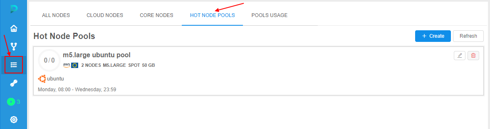
Note: the HOT NODE POOLS tab is shown to admins and to users with the ROLE_RUN_ADMIN, ROLE_CLUSTER_READER or ROLE_NODE_POOL_MANAGER role - a ROLE_NODE_POOL_MANAGER reaches it to create a Future dated pool. The neighbouring POOLS USAGE tab is shown to admins and to the ROLE_CLUSTER_READER role.
Pool creation
To create a new pool:
- At the HOT NODE POOLS tab, click the "+ Create" button.
- The pop-up appears:
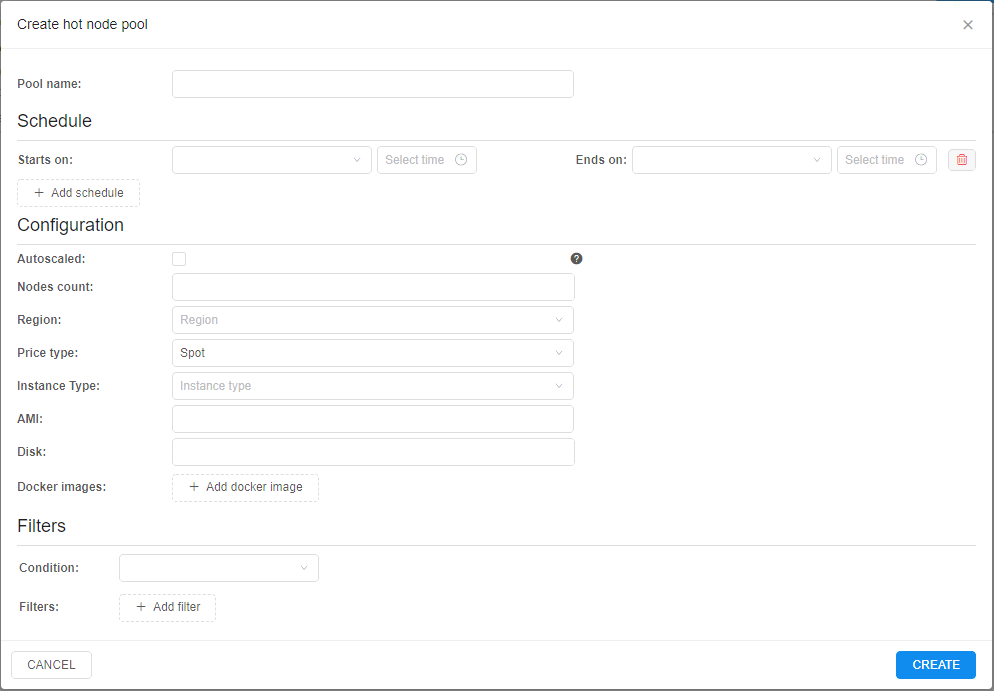
- Specify the pool name
- Specify the Pool type:
- Standard - a pool node runs one job at a time, as every pool does today.
- Shareable node - several jobs may share one pool node, which the platform divides between them.
The pool type is chosen when the pool is created and cannot be changed afterwards.
- Specify the pool schedule - weekly time period during which the pool nodes will be up (running and waiting for the jobs):
- specify the day of the week and the time of the day for the beginning of the period, e.g.:
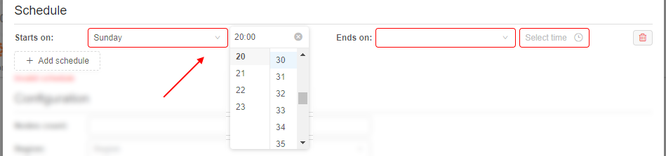
- specify the day of the week and the time of the day for the finish of the period, e.g.:
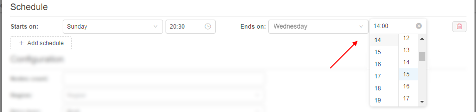
- if you wish, you can add several schedule periods for the pool. For that, click the "+ Add schedule" button and repeats actions described above for a new period:
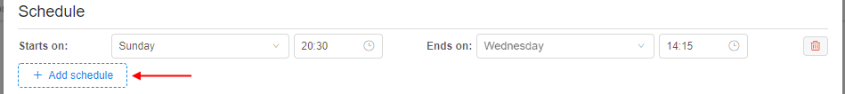
- remove the unnecessary schedule you can by the corresponding button next to the schedule
Note: the pool shall have at least one schedule, except a pool backed by a capacity reservation, which takes none - see Pools backed by a capacity reservation
- specify the day of the week and the time of the day for the beginning of the period, e.g.:
- Specify the pool nodes count, e.g.:
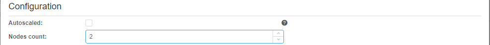
It is the number of nodes in the creating pool (nodes count that will be run according to the schedule and wait for jobs).
Also you can set the checkbox Autoscaled - it allows to create instance pools with non-static size. In such case, the node pool size will be automatically adjust according to current cluster workload: increase pool size if most of its instances are assigned to active runs and decrease pool size if most of its instances are idle: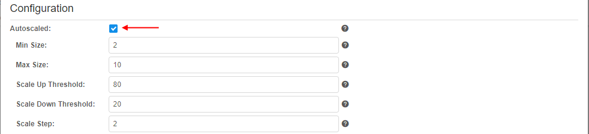
In case of Autoscaled node pool, additional fields appear:- Min Size - pool size cannot be decreased below this value. This count of nodes will be always run in cluster (according to the schedule(s))
- Max Size - pool size cannot be increased above this value
- Scale Up Threshold - sets the threshold in percent. If percent of occupied instances of the pool is higher than this value, pool size shall be increased
- Scale Down Threshold - sets the threshold in percent. If percent of occupied instances of the pool is lower than this value, pool size shall be decreased
- Scale Step - pool size shall be decreased/increased with this step
- Specify the Cloud Provider/Region from where the pool nodes will be run:
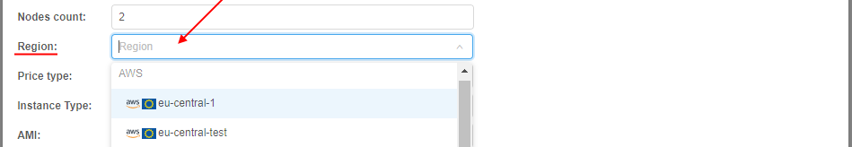
- Specify the price type for the pool nodes (Spot by default):
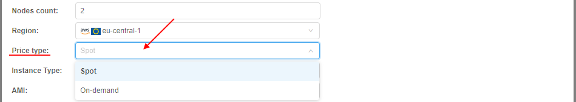
- Specify the instance type that will be used for the pool nodes:
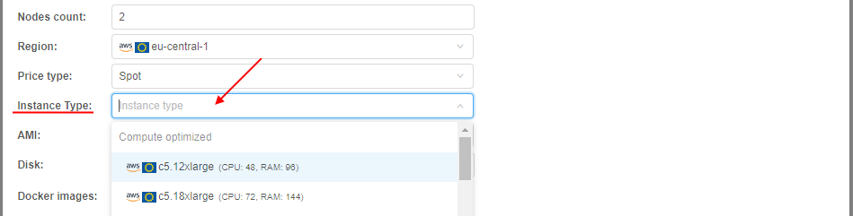
- If you wish, you may specify the AMI that will be used for the pool nodes. It is non-required. Without specifying - the default deployment AMI will be used.
Note: this field is deprecated in favor of the pool's launch configuration. It is still honored: when specified - at creation, or later by editing the pool - it is used as theamiof the pool's launch configuration. - Specify the disk size (in
Gb) for the pool nodes, e.g.:
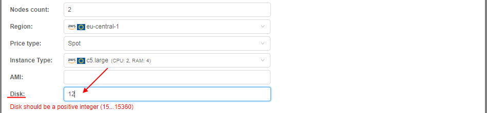
Note: the pool node will be assign to the job only if user request for a job a smaller disk than pool node has. Also note that the real disk size used for a job differs upwards from the user request - both these notes should be considered. E.g. if user requests 30 GB disk, real node disk may be 40 GB. Then if the pool node has disk setting 35 GB - it will not be assigned to the user job (as the real disk size 40 GB is more than the pool node disk size 35 GB). But if the pool node has disk setting 45 GB - it will be assigned normally to the user job. So, the pool disk should be set with a margin - of course, if the admin knows the disk size usually requested by the user.
On the other hand, the pool node disk size can be purposely set as a large volume. In that case, it would be inefficient to use such pool nodes for user "small" requests. For resolve that issue, the certain system preference is implemented -cluster.reassign.disk.delta- this delta sets the max possible difference that could be between the pool node disk size and the real disk size requested by the user for a job. E.g. if the real disk size requested by the user is 100 GB, the pool node has disk setting 500 GB andcluster.reassign.disk.deltais set 300 GB - the pool node will not be assigned to the such user requested job (as the difference is more than delta). But if the real disk size requested by the user is 250 GB - the pool node will be assigned to the such requested job. - Specify Docker image(s) that should be pre-uploaded to the pool nodes:
- click the "+ Add docker image" button:
- select the image in the appeared dropdown list, e.g.:
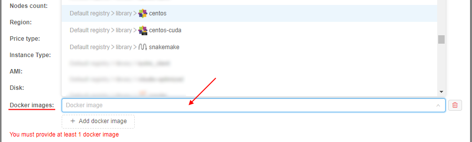
- select the image version in the appeared additional dropdown list:
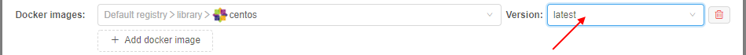
- you may add several images analogically as described above
Note: at least one Docker image shall be added. Select of these images means that they will be pre-uploaded to the pool nodes. But such nodes also can be assigned to other jobs (with non-selected images) if other pool settings match the user request. In this case necessary requested image will be uploaded during the job initialization (so, it will just take longer).
- click the "+ Add docker image" button:
- If you wish you can set additional filters for the pool usage. They can be customized at the Filters panel:
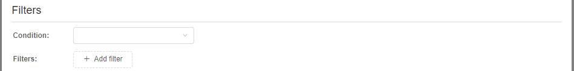
Condition field allows to set which condition will use for the set filters:
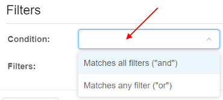
Filters section allows to add any count of additional filters for the created pool.
Click the button to add a filter.
In the appeared field select a property that will be used for the filtering:
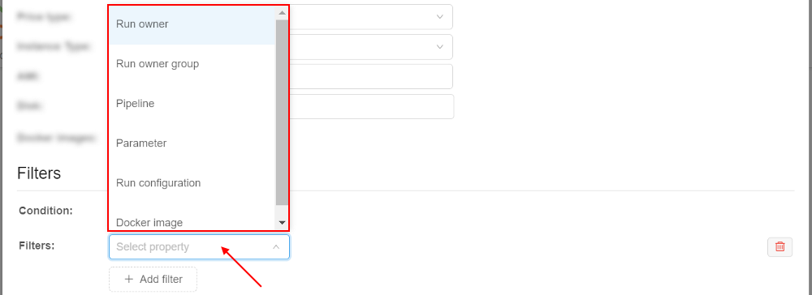
Possible properties:- Run owner - allows to set user restrictions for the current pool usage
- Run owner group - allows to set user group restrictions for the current pool usage
- Pipeline - allows to set pipeline restrictions for the current pool usage
- Parameter - allows to set parameter (and its value) restrictions for the current pool usage
- Run configuration - allows to set detach configuration restrictions for the current pool usage
- Docker image - allows to set docker image restrictions for the current pool usage
Set the desired property in the list, e.g.:
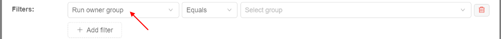
For the selected property set the condition:
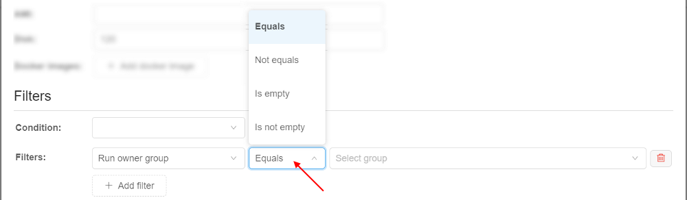
For the selected property specify/select the value, e.g.:
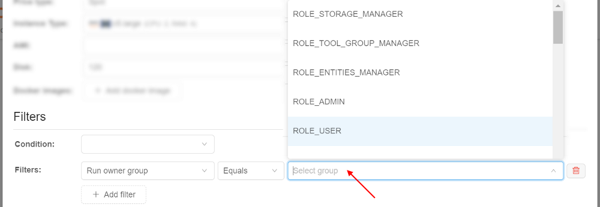
You can select any count of properties in the same way as described above, e.g.:
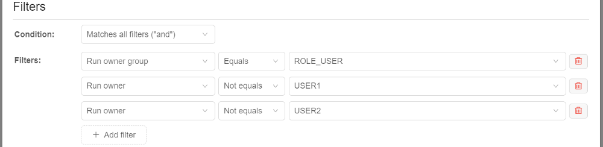
In the example above, nodes from the pool will be assigned to the job only if it will be launched by any user (except USER1 and USER2) with the ROLE_USER role (of course, if other settings match).
To remove the filter use the corresponding button in the filter row
The filters that say whose jobs the pool serves - Run owner and Run owner group - do not hold against the pool's own owner: a job of the user who owns the pool is assigned to one of its free nodes as if those filters matched it, even where a Run owner filter excludes that user. The filters about the job itself - its Docker image, Pipeline, Run configuration or a Parameter - hold for the owner as for anyone else, so a pool kept for one image still serves that image only. A pool backed by a capacity reservation adds one more condition its owner does not escape: a job is assigned to its nodes only inside the reservation's window.
- To confirm the pool creation, click the CREATE button. While the pool is being created, that button shows a progress indicator and the whole form is blocked - every field, the Add schedule button and the schedule rows included - so the request cannot be sent twice or the form edited while it runs. The SAVE button of an existing pool behaves the same way
- Created pool will appear in the list:
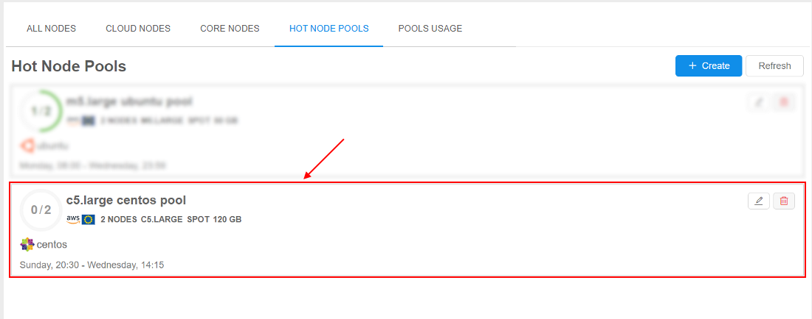
Future dated node pools
- At the HOT NODE POOLS tab, click the "+ Create" button. The pop-up now starts with a Mode field:
- Default - the pool described in Pool creation above. This is the preselected value.
- Future dated - a pool that reserves a block of capacity for a single, one-time commitment window instead of a weekly recurring schedule.
Note: Mode can only be chosen while creating a pool - it is disabled when editing an existing pool. Reopening an existing Future dated pool correctly shows Future dated, not Default.
- Both pool types from Pool creation are available in Future dated mode. A new Future dated pool opens with its Filters panel already pre-filled with one criterion - Run owner Equals
<your login>- and the Condition set toMatches all filters ("and"). This is a starting point, not a locked value: you may edit or remove it, and it applies the same way for either pool type. Opening an existing pool for editing never re-adds or changes this criterion, so it is never rewritten to whoever happens to open the pool. - For a Future dated pool, the Schedule panel shows a single one-time commitment window instead of the weekly recurring schedule:
- Search from - the earliest moment the reservation may begin. Together with Search until it defines a search window: the cloud provider reserves the requested Duration (days) somewhere inside that window, as soon as matching capacity becomes available, so the dates actually granted are chosen for the reservation, not these two values. Search from must be between 5 and 120 days from now.
- Search until - the end of the search window; the reservation must finish by then. It must be later than Search from.
- Duration (days) - the committed length, in whole days, with a minimum of 14. It must fit between Search from and Search until. A hint under the fields tells you whether the current window covers the duration.
- The following constraints also apply when creating a Future dated pool:
- Spot pricing is not available - only on-demand price type can be used for a reservation.
- Nodes count must be at least 1 when you create the pool - but once created, the pool shows no nodes until the reservation is activated: the platform sets the pool's node count to the reserved amount when the reservation starts, and back to zero once it ends.
- Autoscaling is not available for Future dated pools - the Autoscaled checkbox and its settings (described in step 6 of Pool creation) are not shown. A Future dated pool always keeps the fixed pool nodes count.
- The rest of the pool settings - Cloud Provider/Region, instance type, AMI, disk size, docker images, node labels - are specified exactly as for a Default pool (price type is restricted as described in step 4 above).
- Click the CREATE button to confirm. The reservation is submitted to the platform for approval rather than applied immediately, and the platform may still reject it for provider-side limits (for example a minimum total vCPU count, or an instance family that is not allowed for reservations) - in which case the error is reported right after clicking CREATE.
Who may create what: administrators and users with the ROLE_RUN_ADMIN role can create pools in either mode, and can view, edit or remove any existing pool. A user with the ROLE_NODE_POOL_MANAGER role also sees the "+ Create" button, but can create Future dated pools only - the Mode field is not shown to such a user. Such a user may open, edit or remove the pools it owns, which are the ones it created, and cannot reach a pool owned by anybody else. Node pools are becoming permission-managed, shareable objects on the backend, but the GUI does not yet expose per-pool sharing, so ownership is the whole of a ROLE_NODE_POOL_MANAGER's access to an existing pool.
Reopening an existing Future dated pool whose reservation has already been scheduled shows the granted window as read-only text under Reservation window:, instead of the editable Search from / Search until / Duration (days) controls. If the reservation has not been scheduled yet, those three controls are shown instead, as read-only (disabled) controls carrying the originally requested values, together with a notice stating what the reservation is doing - waiting for an administrator's approval, waiting to be placed with the cloud provider, being assessed by it - or, where it will never be placed, why: the reservation was cancelled, failed, or has ended. Nodes count is shown as read-only text in the form 0 out of N (N being the reserved instance count), because the pool's own node count stays 0 until the reservation is activated. The price type is also disabled on an existing reservation pool, because neither it nor the window can be changed through this form once the pool exists.
View existing pools
At the HOT NODE POOLS tab, you can view all existing node pools, their schedules, settings, states.
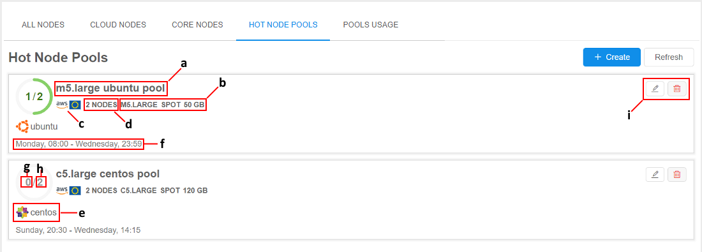
Where:
- a - pool name
- b - pool nodes settings (instance type, price type, disk size)
- c - pool nodes Cloud Provider / Region
- d - the summary count of nodes in the pool. In case of "autoscaled" pool, this count is displayed as an interval, e.g.:
- e - the list of pre-uploaded docker images on the pool nodes
- f - the list of pool schedules
- g - the count of pool nodes assigned to jobs in the current moment
- h - the summary count of pool nodes running in the current moment (in background or assigned to jobs)
- i - controls to edit/remove the pool, and to open its utilization. Each appears only where it can be used: editing and removing for an administrator, a ROLE_RUN_ADMIN or the pool's owner, and the utilization chart for whoever may open the Pools usage tab behind it - an administrator, a ROLE_RUN_ADMIN or a ROLE_CLUSTER_READER
A Future dated pool's card additionally carries a reservation badge, reflecting the reservation's own status as reported by the platform - one of Requires approval, Approved, Assessing by cloud provider, Scheduled, Active, Finalizing, Finished, Purchase failed, Failed or Cancelled. While the reservation is not yet activated, the card shows the reserved instance count as its total node count instead of 0 - e.g. 0 / 3 for a reservation of 3 instances, rather than 0 / 0 - and such a pool is still not marked (disabled), unlike a Default pool with a node count of 0, which still is.
While a reservation is Active, its pool's instance type is offered as reserved capacity on the pipeline launch form - see 6. Manage Pipeline - to any user who can read the pool, not only to the one who created it.
To view the pool state, click it in the list, e.g.:
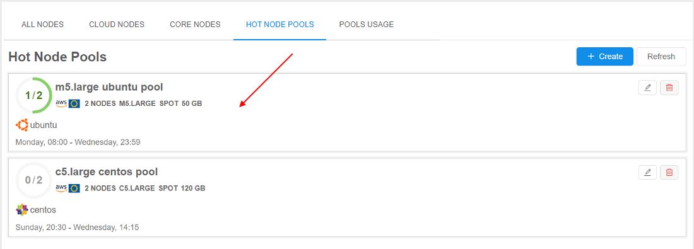
The pool nodes list will appear:
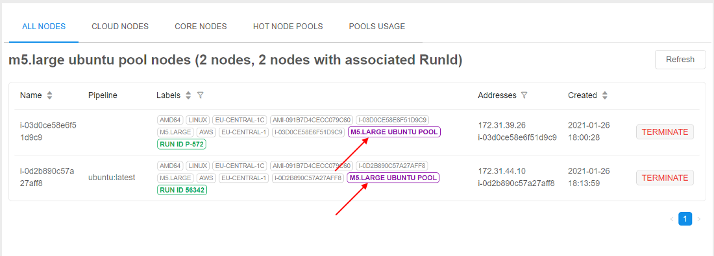
Nodes from the pool are marked by violet labels with the pool name.
Pool nodes that are running in background but not assigned to jobs yet have Run ID with format
P-<number>.
Edit existing pool
To edit the existing pool, click the corresponding button on its tile:
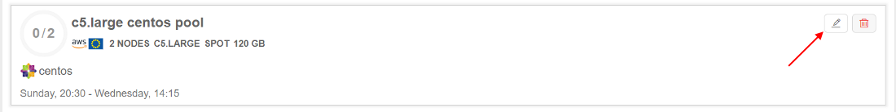
The edit pop-up will be open:
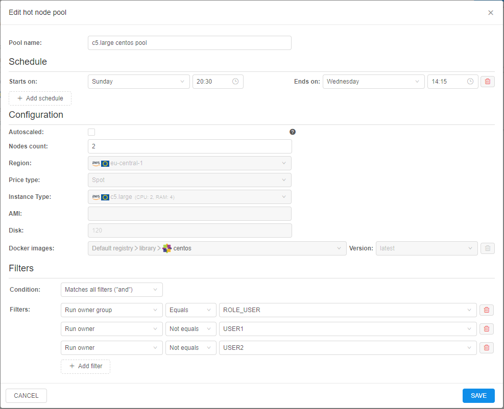
You can edit only pool name, pool schedules, pool nodes count (and "autoscaled" property/settings) and filters.
Make changes and click the SAVE button to confirm.
Delete existing pool
To delete a pool, click the corresponding button on its tile. A confirmation pop-up asks
"Are you sure you want to delete "<pool name>" pool?".
For a Future dated pool whose capacity reservation is still open - any status but Requires approval, Finished, Purchase failed, Failed or Cancelled (see Future dated node pools) - the pop-up additionally shows a warning: deleting the pool gives the reservation up too, and the cloud provider may still charge for the capacity it already committed. The DELETE button stays disabled until the Force deletion checkbox is ticked, confirming the deletion is wanted despite that. This applies equally to an administrator and to the ROLE_NODE_POOL_MANAGER who owns the pool - neither role waives the warning. A Default pool, and a Future dated one whose reservation has already reached one of the statuses above, show no warning and no checkbox: the DELETE button is enabled right away.
Pool launch configuration
A pool may have its own launch configuration - how its nodes are started - in the amiConfiguration field of the pool. It has the same form as an entry of the amis list of the region in the cluster.networks.config system preference:
"amiConfiguration": {
"ami": "ami-0123456789abcdef0",
"init_script": "/opt/api/scripts/init_multicloud_v1.15.4.sh",
"fs_type": "btrfs",
"embedded_scripts": { "fsautoscale": "/opt/api/scripts/fsautoscale.sh" },
"additional_spec": { "IamInstanceProfile": { "Arn": "arn:aws:iam::123456789012:instance-profile/node" } },
"availability_zone": "us-east-1c",
"subnet": "subnet-0123456789abcdef0"
}
The launch configuration can be specified in the amiConfiguration field of the pool create or update request (POST /cluster/pool, an update is a request with the pool's id):
- if a create request specifies it, it is used as is
- if a create request doesn't specify it, the pool has none, and its nodes are launched as the region's
amisentries say - if an update request specifies it, it replaces the current one; if not, the current one is kept
- the AMI of the pool, if specified, is used as the
amiwhen the launch configuration doesn't specify one, and also when the AMI is changed later by editing the pool
A launch configuration only needs the fields that differ from the region's amis entry the pool's nodes match - the other fields are taken from that entry when a node is launched, so changes of cluster.networks.config reach the pool's new nodes.
A specified launch configuration is checked:
- for an AWS region that configures
networksincluster.networks.config, theavailability_zoneshall be one of its zones, and thesubnetshall be the subnet configured for that zone - Windows images are not allowed, as for the AMI field
A launch configuration sent unchanged in an update request - e.g. when the pool is resized - is not checked again.
When a node of a pool with a launch configuration is launched, the pool's configuration is applied over the region's first amis entry that matches the node, as for any other node:
- every field the pool's configuration sets wins;
additional_specandembedded_scriptsare merged key by key - a key the pool's configuration sets replaces the entry's value for that key as a whole - the fields the pool's configuration doesn't set are taken from the matching entry, or take their default values if no entry matches
- the
platform,instance_mask,permissions,docker_imageandrun_parametersfields of the pool's configuration are not used subnetis a pool-only field: the pool's nodes are launched into that subnet- if
availability_zoneis set and no subnet fixes it, the pool's nodes are launched in that zone
Currently, the launch configuration is applied to AWS pools only - except its ami, which is used as the pool's image on every Cloud Provider.
A run uses a pool's node only if it asks for the same node image as the pool - the launch configuration's ami, or the pool's AMI - or if neither the run nor the pool sets one: both then get the image of the region's matching amis entry.
Pools backed by a capacity reservation
Capacity reservations are available in AWS regions only. A request that creates a pool backed by a capacity reservation in a region of another cloud provider is rejected.
An administrator creates any pool. A user with the ROLE_NODE_POOL_MANAGER role creates a pool only when the request carries a capacity reservation: a request for an ordinary pool from such a user is refused as unauthorized, rather than rejected as invalid. Whether the reservation then needs an administrator's approval is for the policies below to say.
For a pool backed by a capacity reservation, the platform chooses the reservation's availability zone itself: it is one of the region's zones that offer the pool's instance type and that the region's networks configure, if any. If the cloud provider can't provide the capacity for the requested date in one zone, the other zones are tried for the same date first, and only then the next date. Every refusal moves the reservation on this way - whether the provider refuses the request as it is submitted or fails, cancels or delays the reservation it had already taken - and the request fails only once no start date left in the requested window can fit the reservation's duration, or no zone can take the reservation at all. A payment the cloud provider rejects fails the request at once: no other date or zone would fare any better. Moving on to the next candidate puts the request back into approval, so a reservation that needed an administrator's approval is approved once only - a request to approve one that is already approved is rejected, and the owner is notified of the attempt that settles the request rather than of each candidate tried.
A future-dated reservation's request may also carry fallbackCandidates - other instance types the platform tries once the main instance type's own window is exhausted: every zone, every date, with no room left for the commitment. A duplicate - matching the main instance type's own instance type and count, or another fallback's - is merged away rather than rejected; what is left is sorted once, when the pool is created, biggest instance first: GPU count, then vCPU count, then memory, all descending, regardless of the order they were sent in. The platform tries the main instance type across its whole window first, then each fallback in that sorted order, each restarting the same window search from its own beginning rather than picking up partway through - instance type is the priority, not the nearest date. The request fails only once every candidate's window is exhausted. Whichever candidate actually lands, the pool's own instance type and count both end up matching it - the instance type as soon as the provider schedules that candidate, the count only once the capacity actually goes live.
Each fallback candidate is validated the same way the main instance type is - the family pattern set by cluster.capacity.reservation.instance.families, and the 32-vCPU floor, against its own instance count. Unlike the main instance type, a fallback candidate must already have a price catalogue entry in the pool's region: the request is rejected rather than silently accepting a candidate that cannot be checked against the vCPU floor or compared by size against the others once a window search starts. The cluster.capacity.reservation.fallback.candidates.max.count system preference bounds how many a single request may carry (default 5, -1 disables the limit). fallbackCandidates is rejected for a pool backed by a capacity block - it names an exact offering, not a window, so there is nothing to fall back to.
Approval is decided once, at creation, across the main instance type and every fallback candidate together: a candidate a DENY policy matches refuses the whole request, the same as if the main instance type alone had matched it; the request is approved outright only when every candidate matches an AUTO_APPROVE policy; otherwise it waits for an administrator once, covering every candidate - switching to a fallback later never asks for approval again.
Once the cloud provider has scheduled the reservation, the platform sets the pool's start date to the reservation's, and its end date to the reservation's end minus finalizingLeadHours of the cluster.capacity.reservation.monitor.settings system preference - the moment the reservation is reported as ending. From then on the pool's nodes take no new runs, so that no job is started on capacity that ends shortly after; runs already on them keep running until the reservation itself ends. The pool's instance type is also set to whichever candidate the provider actually scheduled at this point already - before any capacity is live - rather than waiting for the reservation to become active; a run that names the pool by CP_CAP_POOL_ID and also names an instance type is checked against this value, so one naming a candidate the search has already slid away from is rejected rather than accepted against a type the pool will not actually launch. The platform also writes the reservation's data into the pool's launch configuration:
- the reservation target, in
additional_spec(CapacityReservationSpecification), so that the pool's nodes consume the reserved capacity - the reservation's
availability_zone, and thesubnetconfigured for that zone
The pool's node count stays 0 until the reservation is active, so no nodes are launched before the reserved capacity exists. These fields, and the pool's own start and end date, are removed when the reservation ends, fails, is cancelled, or is moved to another date or zone after the cloud provider refused it: the pool is left with no nodes, and is reported as inactive until a reservation schedules it again.
A pool backed by a capacity reservation can't be autoscaled: it runs at the reserved size. A request that creates such a pool as autoscaled is rejected. Nor can it follow a schedule - the reservation's own window decides when its nodes are available - so a request that gives such a pool a schedule is rejected, at creation and in an update alike.
The reservation also limits how the pool can be edited. An update request that changes any of the following is rejected:
- the node count - it is
0until the reservation is active, the reserved count while it is, and0again once it ends or is cancelled - Autoscaled
- the schedule - a pool backed by a capacity reservation follows none
- the price type
- the launch configuration (
amiConfiguration), or the instance image
Other settings - e.g. the name and the filters - can be changed as for any other pool. A request that sends the current values of the fields above back unchanged, or doesn't specify the launch configuration or the instance image, is accepted. To change these settings, create a new pool with a new reservation.
The pool's poolType is not in the list above either: a reservation-backed pool created with the wrong type can be switched between STANDARD and SHAREABLE_NODE by an update request, the same as for any other pool (see Shareable pool runs configuration), without giving up or re-requesting the reservation itself.
Deleting the pool gives up its reservation. One still waiting for an administrator's approval has bought nothing, so it is cancelled and deleted along with the pool. One the platform has already acted on - approved, or anything after that - is given up only when the request asks for it: DELETE /cluster/pool/{id}?force=true cancels the reservation at the cloud provider, which may cost a cancellation charge, and then deletes the pool. Without force such a request is rejected and names the reservation's status. A reservation that has already ended, failed or been cancelled is simply deleted with the pool.
The autoscaler doesn't resize a pool backed by a capacity reservation.
A future-dated capacity reservation shall be at least 32 vCPUs in total, e.g. 8 instances of m5.xlarge. A smaller request is rejected when the pool is created.
Which instance types the cloud provider will reserve capacity for is set by the cluster.capacity.reservation.instance.families system preference: a JSON object keyed by reservation type (FUTURE_DATED or CAPACITY_BLOCK), each value a comma-separated list of instance type patterns matched against the requested instance type, in the same format as cluster.allowed.instance.types (e.g. c5.*). A reservation type with no entry in the object has no restriction at all. The preference ships with {"FUTURE_DATED": "c*,m*,r*,i*,t*,g*"} - a future-dated reservation is restricted to those families by default, while a capacity block is unrestricted until an administrator adds a CAPACITY_BLOCK entry of its own, e.g. "CAPACITY_BLOCK": "p5.4xlarge" to allow only that one instance type.
The reservation's commitmentDuration is requested in seconds, and shall be at least 14 days (1209600) - the commitment the cloud provider requires. The requested window shall be wide enough to hold it: the reservation is scheduled at a start date inside the window, and runs for the commitment from there. The notifications about a reservation report the commitment in days and hours.
The policies that decide what becomes of a requested reservation are set in the cluster.capacity.reservation.policies system preference. Each carries an action: a request that matches a DENY policy is refused, and neither the pool nor the reservation is created - the error names the instances asked for and says to ask an administrator; one that matches an AUTO_APPROVE policy and no DENY policy is approved straight away; one that matches neither waits for an administrator's approval. A DENY match wins over an AUTO_APPROVE one whatever order they are listed in, and an administrator's own request is approved without consulting the policies at all. The policies address the commitment as the commitment.duration field, in seconds - e.g. {"type": "LOGICAL", "field": "commitment.duration", "operand": ">", "value": "1209600"} matches a reservation committed to for longer than 14 days. An expression that names a field the platform does not know is skipped, with a warning in the log, and evaluates as not matching: it makes an AND statement - and a statement that is that expression alone - not match at all, while in an OR statement the other expressions still decide. So a policy carried over from a platform version that named the field differently stops taking effect rather than failing loudly.
Browsing capacity block offerings
AWS Capacity Blocks for ML are a second kind of reservation, for the highest-guarantee accelerated capacity: a block of ML/accelerated instances bought whole, for a fixed window AWS currently has for sale - unlike a future-dated reservation, there is no date to search, and no cancelling it once bought. Two read-only endpoints let a user see what is on offer before creating a pool backed by one - see Pools backed by a capacity block.
GET /cluster/capacity-reservation/instance-types?regionId={id} lists the instance types a region currently sells as capacity blocks - most instance types never are, so this is narrower than the region's general instance type list - together with enough of each type's specification (vCPU count, memory and, where it has one, its GPU) for a user to tell them apart before searching offerings for one. POST /cluster/capacity-reservation/offerings searches those offerings for a duration and the date to start searching from, with an optional end to that window, against a list of candidates - each a concrete instance type and the count wanted of it. There must be at least one candidate, and the request is rejected before AWS is ever asked otherwise; the cluster.capacity.block.offering.candidates.max.count system preference bounds how many a single search may carry (default 5, -1 disables the limit). Each candidate is its own search against AWS - so a user can ask about a primary instance type and whatever fallback types they would also accept in one round trip - and if AWS fails for any one of them, the whole search fails rather than answering with a partial result. The response is a single list of offerings merged across every candidate and sorted by start date, nearest first, each one naming the offering's id, instance type, availability zone, instance count, its exact start and end date, the duration and its up-front price - so offerings for different candidates are told apart by their own instanceType, not by which part of the request asked for them. Choosing which offering to actually buy is still a manual choice from this response; nothing about carrying several candidates changes how a pool is created from the chosen one, below.
A capacity block's duration is requested in hours, and AWS only sells blocks in specific lengths: 1-day steps from 1 up to 14 days, then 7-day steps from 14 up to 182 days. A duration outside that stepping is rejected before AWS is even asked.
The same is true of the search's other required fields and AWS-imposed limits: duration and the start date to search from are required on the request, and each candidate's instance type and count are required on it; a candidate's instance count must also be a whole number from 1 to 64, and the start date no more than 8 weeks ahead - all rejected locally rather than left for AWS's own refusal.
Both endpoints are available to an administrator, a ROLE_RUN_ADMIN, or a user with the ROLE_NODE_POOL_MANAGER role - the same roles that may create a reservation-backed pool, since no pool exists yet at this point to check a permission against.
Pools backed by a capacity block
A pool may also be backed by one of the offerings found above: set capacityReservationRequest.reservationType to CAPACITY_BLOCK, and carry the offering's capacityBlockOfferingId, availabilityZone, start and end date (as requestedStartDate/requestedEndDate) and duration (as commitmentDuration, in seconds - the offering itself reports it in hours) straight from the search response. A capacity block names an exact slot rather than a window to search, so there is no date or zone for the platform to pick, unlike a future-dated reservation.
A refusal is never retried with another candidate the way a future-dated reservation's is: if the cloud provider refuses the purchase - the offering is no longer on offer, or the payment is rejected - the request fails outright. To try again, search for a new offering and submit a new request with originId set to the failed one; asking for no more than the failed request's own commitment inherits its approval, the same as for a future-dated reservation.
The minimum vCPU count described above is a future-dated reservation's own requirement: a capacity block already names an exact, already-searched instance count (1 to 64), so there is no size to enforce. The policies in cluster.capacity.reservation.policies apply the same way as for a future-dated reservation, including one written against reservation.type = CAPACITY_BLOCK to approve or deny this kind of request differently from the other. The cluster.capacity.reservation.instance.families preference described above applies here too, keyed separately by CAPACITY_BLOCK - by default it carries no entry for this type, so no instance type restriction applies to a capacity block unless an administrator adds one.
Deleting the pool follows the same rule as for a future-dated reservation, with one exception: once the block has actually been purchased, force=true no longer helps. A capacity block cannot be cancelled at the cloud provider at all - there is no cancellation charge to weigh here, the provider simply will not give the capacity back early - so the delete request is rejected regardless of force until the block ends on its own, fails, or is cancelled before being purchased. Before the purchase happens - still waiting for approval, or approved but not yet submitted - the pool can be deleted exactly as for a future-dated reservation. A capacity block also ends only at its own fixed time, which AWS enforces on its own; unlike a future-dated reservation, the platform does not call the cloud provider to end it.
Note: the notification templates for a capacity reservation (see Email notifications) are shared between both kinds. An admin customizing one can tell them apart by its reservationType template parameter, e.g. to say something a future-dated reservation's own wording would not. The offering a capacity block bought is available to the same template as the capacityBlockOfferingId parameter.
Extending a capacity block
A capacity block already purchased and still active can be bought more time on, before its fixed end arrives - an AWS capacity block extension, not a new reservation. GET /cluster/capacity-reservation/{id}/extension-offerings?durationHours={n} searches what AWS currently offers to extend it by that much; POST /cluster/capacity-reservation/{id}/extension, naming the chosen offering's id as extensionOfferingId and the same durationHours, requests it. Both are available to the reservation's owner or an administrator - the same bar as cancelling it.
AWS may have nothing on offer at the exact durationHours asked for, even though it is a valid stepping value, while a shorter one is still available - e.g. 10 days asked for, nothing past 7 actually available. Setting findNearestAvailable=true on the search has it fall back, in that case, to the longest shorter duration AWS does still have an offering for, rather than coming back empty; the offerings it returns carry their own capacityDurationHours, so the caller reads the duration actually found off them rather than being told separately. Left at its default false, the search answers only the exact duration asked for, as before.
An extension can only be requested from 1 hour up to 57 days before the block's current end, and only while the block is active or about to finalize; a request outside that window, or for a reservation that is not a capacity block at all, is rejected before AWS is ever asked. Its duration follows AWS's own capacity block stepping for a single extension - 1-day steps up to 14 days, then 7-day steps up to 182 days total - but there is no limit to how many extensions a block can take over its lifetime, so this stepping is checked against the requested duration alone, not against anything the block has already been extended by.
An extension is a non-refundable up-front payment, so it goes through the same cluster.capacity.reservation.policies an original purchase does, evaluated against its own commitmentDuration (the requested durationHours, in seconds) rather than the reservation's: one that matches a DENY policy is refused, one that matches an AUTO_APPROVE policy and no DENY policy is purchased straight away, and one that matches neither waits for an administrator - who approves it with POST /cluster/capacity-reservation/extension/{extensionId}/approve, administrators only, since approving one commits the platform to paying for it. Once purchased, the reservation's own end date moves out to what AWS granted, so everything that already reads it - the backing pool's own end date among them - keeps working unchanged; a request that fails, by policy or at the provider, leaves the reservation exactly as it was.
A retry of a request that failed - after approval, or at the provider - may name that failed request's id as originId in the body of POST /cluster/capacity-reservation/{id}/extension. Asking for no more than the failed request's own duration inherits its approval without waiting on an administrator again, the same way a retried capacity reservation or capacity block purchase does: an administrator who already approved paying for 48 hours has, by that, already approved paying for 24. Naming an originId that is not FAILED, that asks for more than it did, or that belongs to another reservation, is not an error - the request simply goes through the policies as if it were new.
The pre-expiry warning (CAPACITY_RESERVATION_FINALIZING, see Email notifications) says whether the block can still be extended at all, through its extensionAvailable template parameter: true for a capacity block that is active or finalizing, false otherwise - including always false for a future-dated reservation, which this template is also sent for. This is a simpler check than GET .../extension-offerings itself makes for a specific duration: it says nothing about the narrower AWS lead-time window, or about whether a given duration still fits the single-extension 14-day/182-day stepping.
Shareable pool runs configuration
A pool with the SHAREABLE_NODE poolType lets several runs share one of its nodes. How they divide it is set by the launchConfig field of the pool:
- if a create request specifies it, it is used
- if a create request doesn't specify it, it is derived from the pool's instance type: CPU and RAM requests are enabled, GPU requests only when the instance type has GPUs; 1 CPU and
1GiBof RAM are held back from each node; the runs' containers are privileged and don't skip container requests - if an update request specifies it, it replaces the current one; if not, the current one is kept
An update request may also change the pool's poolType itself: switching it to SHAREABLE_NODE builds a default launchConfig exactly as a create request with none would, and switching it away from SHAREABLE_NODE drops the launchConfig entirely, since other pool types don't use one.
The runs are assigned to the pool's own nodes by the pool_id label, which every node of a pool carries, with the pool's ID as its value - unless the launchConfig specifies a selector of its own. Naming the pool's ID via the CP_CAP_POOL_ID parameter (see Guaranteeing a run's capacity) reaches a shareable pool's nodes the same way: the run's own launch picks up this stored selector automatically.
The launchConfig of other pool types is not used, and is ignored in a request.
Guaranteeing a run's capacity
The example below is a soft match: a run eligible for a pool is only ever assigned to one of its nodes later, by the autoscaler, and only once a node is actually free - it can still land on an unrelated, non-pool node if the pool's own nodes are busy at the moment the run is launched.
A run that sets the CP_CAP_POOL_ID parameter to a pool's ID is bound to that pool exclusively instead:
the autoscaler's own matching cycle only ever assigns it one of that pool's own free nodes - never an
unrelated node or a different pool's, even one it would otherwise be eligible for. The run is never
silently launched off the pool. If the pool has no free node yet - because it is not yet active, or
because all its nodes are busy with other runs - the run is left pending and waits. The maximum time it
will wait is governed by the cluster.occupied.node.pool.wait.sec system preference (default
86400 seconds, i.e. 24 hours). Once that limit is reached, the run fails with a message naming the
pool and the elapsed time. Setting the preference to 0 removes the limit and lets the run wait
indefinitely.
Where the pool's own node already exists, is free, and still cannot take the run, nothing later would change that - so the run fails immediately, on that same autoscaler cycle, rather than spending time on a certainty. This happens for four reasons, each named in the run's failure reason along with the pool: the run's requested instance type or disk does not match what the pool's own node actually offers; the pool's own filter (see Pool launch configuration) rejects the run; the pool's reservation window has already ended; or the pool's end date has passed and the pool is no longer active.
CP_CAP_POOL_ID is an opportunity, not a requirement: a run that doesn't set it is unaffected, and
keeps the soft, eligibility-only matching described below.
Most of this guarantee resolves on the autoscaler's own schedule, not at the moment the run is launched:
a pool that currently has no free node only fails the run after cluster.occupied.node.pool.wait.sec
seconds have elapsed since the run was submitted, not as an error from the launch call itself. The
exception is the pool's own free node already failing one of the checks above, which ends the run
immediately instead.
A few things are checked immediately, at launch, instead of waiting for that: CP_CAP_POOL_ID must be a
valid pool id, the named pool must exist, and if the run explicitly asks for an instance type or a
region, it must be the pool's own - every node in a pool is provisioned alike, from the pool's own fixed
configuration, so this much is already knowable without waiting for a live free node. The launch is
rejected outright, naming which of these failed, in every case. A run that doesn't explicitly ask for an
instance type or region is unaffected by that particular check either way - there is nothing concrete yet
to compare against the pool.
A pipeline's own config.json may declare a default value for CP_CAP_POOL_ID, the same as for any
other parameter: a launch request that doesn't set it gets the pipeline's default pool, and one that
does set it overrides the default.
If the named pool is itself a shareable pool, the run's launch
picks up that pool's own launchConfig node selector automatically, in place of the RUN_ID_LABEL
selector every other pool uses - overriding anything the launch request itself supplied, exactly the
way the launch form's own node-type selector already does when a user picks a pool directly. Any other
pool type has no selector of its own, so this changes nothing for them.
Example of using
- For example, there is the nodes pool that was created as described above:
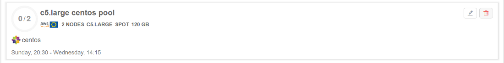
- User launches the tool (in any time moment according to the schedule) with settings corresponding to pool nodes settings (same region, instance type, price type, smaller real disk size and in accordance with all configured filters), e.g.:
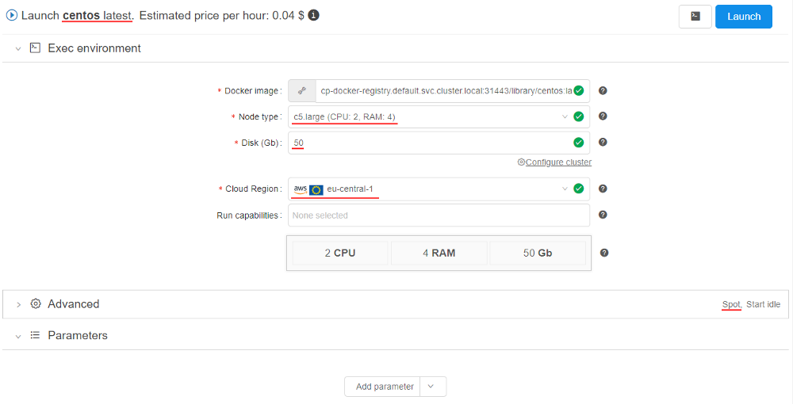
- After the launch, the system checks if there are any empty nodes in the cluster. If not, then system checks are there any empty nodes in the "hot node pools" match the requested job - and uses such hot node pool if it matches:
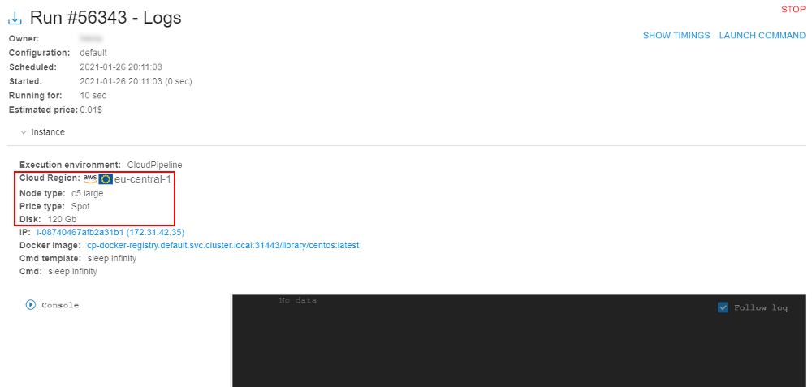
So, the running node from the "hot node pool" is assigned to the job after just several seconds.
Please note, that the disk was changed according to the configured one for the pool node. - Click the IP hyperlink to open node info:
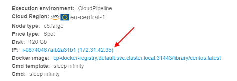
- At the node monitor page, you can see that it is the node from the pool:
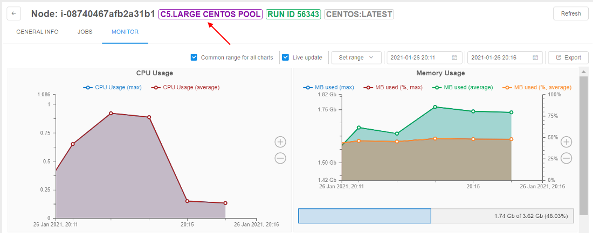
- Open the HOT NODE POOLS tab of the Cluster state section:
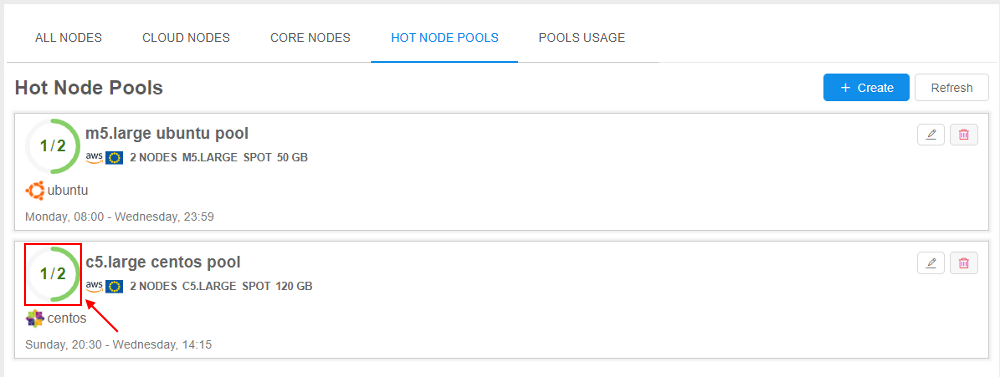
See that the pool state is changed (one node from two is occupied).
Example of using of the "autoscaled" node pool
- Open the static-size node pool, e.g.:
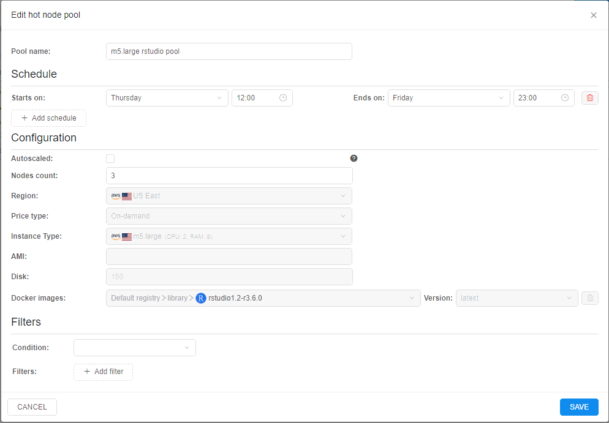
- Set the Autoscaled checkbox
- Specify the following autoscaled settings:
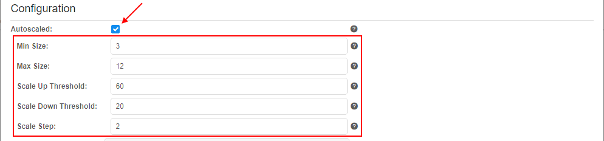
- Save changes:
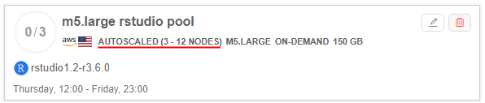
- Launch at least 2 runs with settings corresponding to pool nodes settings - to occupy 2 of 3 nodes:
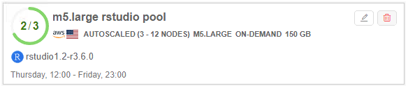
- As the occupied instances percent of the pool is higher than specified Scale Up Threshold (60%) - pool size will be automatically increased by the Scale Step size (2) in some time:
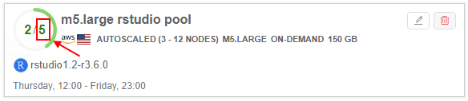
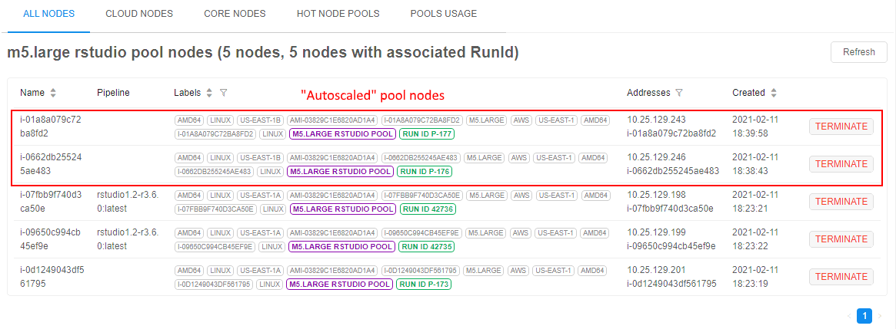
Pool utilization
Additionally, admins have the following abilities:
- view charts with hot node pools utilization per day/month
- enable a new type of the email notification - about the event when all pool node instances are used
For the viewing of the hot node pool utilization, there is a separate tab Pools usage in the Cluster state section:
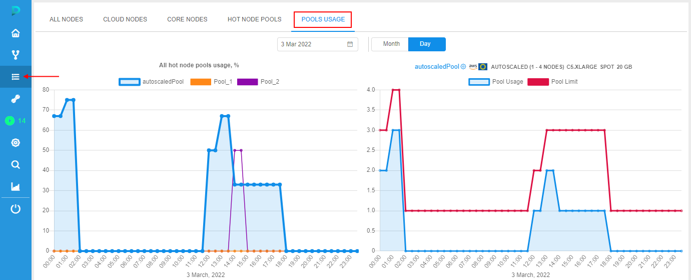
At this tab, there are:
- panel with a chart showing the utilization of all existing hot node pools (left chart):
- info is being displayed as line chart for each hot node pool - with time on X-axis and pools utilization (in percent) on Y-axis
- user can hover any point of the desired hot node pool - the following info will appear:
- time range of the point
- hot node pool name
- maximum utilization (in percent) of that pool on that time range - i.e. the ratio of the maximum number of busy nodes to the total possible number of nodes on that time range
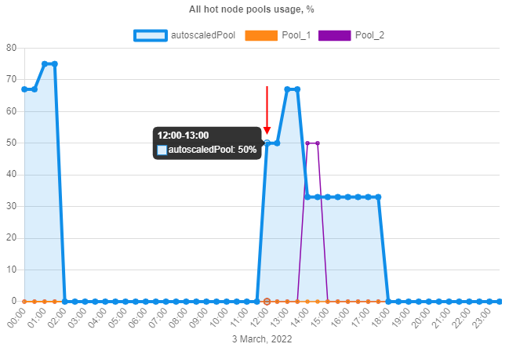
- panel with a chart showing the utilization of a certain selected hot node pool (right chart):
- info is being displayed as 2 line charts - with time on X-axis and a certain pool utilization (nodes under load count) on Y-axis:
- first line chart (with underlying) - the chart of the selected hot node pool utilization. Hot node pool can be selected by the dropdown list above the diagram. By default, the first hot node pool (by alphabetical ascending sorting) is auto selected. Highlighting of the currently selected pool chart for both diagrams (left and right) is the same
- second line chart (always red) - the chart of the selected hot node pool limit, i.e. it is the line that shows what was the maximum possible size of the pool at that time range
- user can hover any point of the selected hot node pool - the following info will appear:
- time range of the point
- hot node pool name
- maximum utilization (nodes under load count) of that pool on that time range
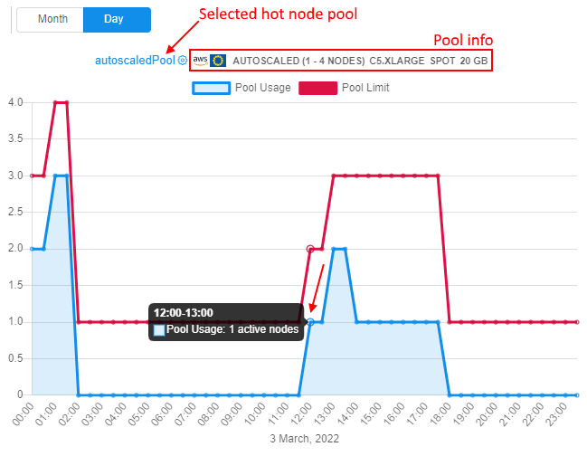
- user can hover any point of the hot node pool "limit" line - the following info will appear:
- time range of the point
- maximum possible size of that pool on that time range (nodes count)
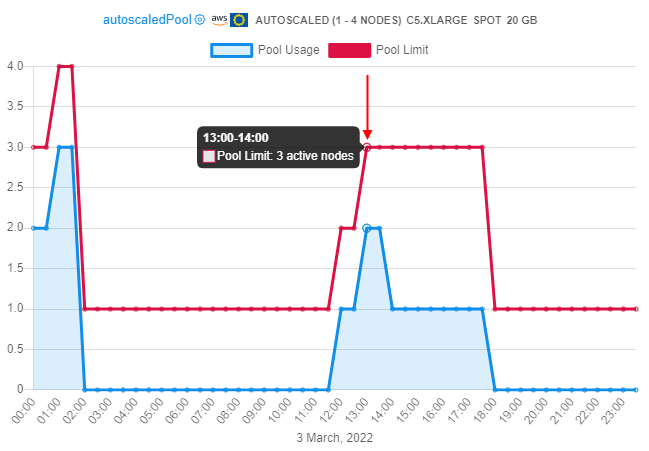
- info is being displayed as 2 line charts - with time on X-axis and a certain pool utilization (nodes under load count) on Y-axis:
By default, charts are shown for the today. Via the Calendar control above the charts, there is the ability to select another day. Charts will be redrawn:
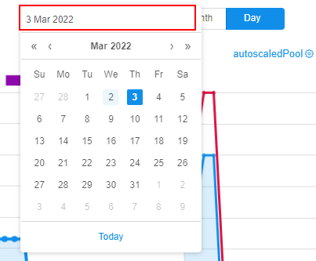
Also, period of the report can be change from the "Day" to "Month" - by the corresponding control above the charts. In this case, charts will be redrawn for the current month, e.g.:
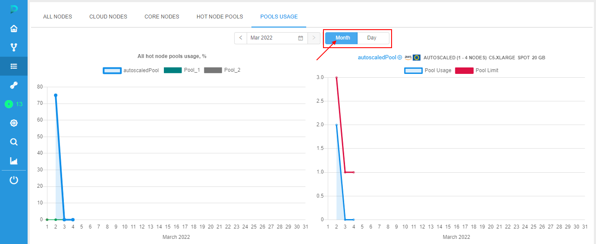
Via the Calendar control above the charts, there is the ability to select another month:
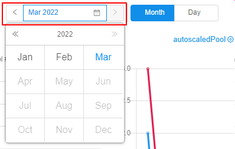
To view details of the another hot node pool utilization - select it in the dropdown above the right chart, e.g.:
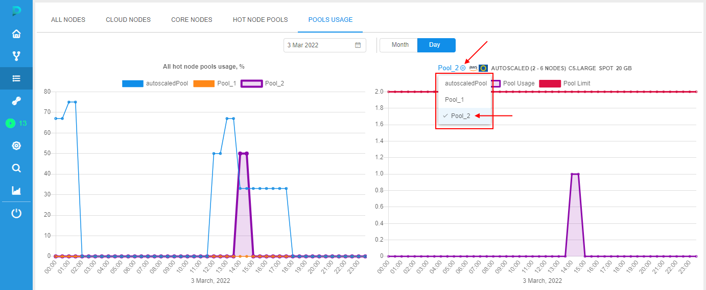
Navigation from the Hot node pool tab
There is the ability to open the utilization for the certain hot node pool from the Hot node pools tab at the Cluster state section.
For that, click the "chart" button at the pool's tile:
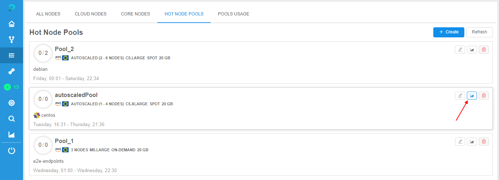
By click this button:
- the Pools usage tab will be opened
- at the left panel, the chart showing the utilization of all existing hot node pools will appear
- at the right panel, the chart showing utilization details of the selected hot node pool (that pool at which tile the button was clicked) will appear
Managing preferences
There are the following system preferences to manage monitoring of the hot node pool usage:
| Preference | Description |
|---|---|
monitoring.node.pool.usage.enable |
Allows to enable monitoring of the hot node pools usage |
monitoring.node.pool.usage.delay |
Determines the frequency of pools load measurements (in milliseconds). Default - 5 minutes |
monitoring.node.pool.usage.store.days |
Determines the storing period for the monitoring data (in days) - all data older that period will be cleaned if monitoring.node.pool.usage.clean.enable set to true.Default value - 365 days |
monitoring.node.pool.usage.clean.enable |
Allows to enable cleaning of the hot node pools usage monitoring data |
monitoring.node.pool.usage.clean.delay |
Determines the frequency of cleaning of pools usage monitoring data (in milliseconds). Data will be cleaned every monitoring.node.pool.usage.clean.delay period, if monitoring.node.pool.usage.clean.enable is set to true.Default value - 24 hours |